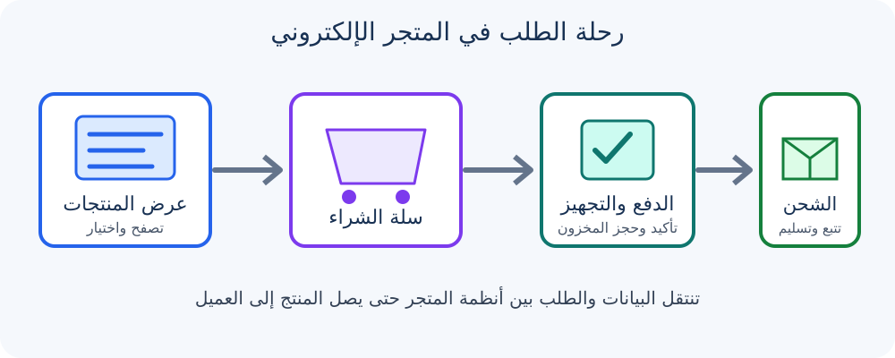

1. المقدمة
شهد الاقتصاد العالمي خلال العقود الأخيرة تحولًا كبيرًا من الأسواق التقليدية إلى الفضاء الرقمي، وأصبحت التجارة الإلكترونية (E-Commerce) جزءًا أساسيًا من قطاع التجزئة والخدمات. لم تعد المتاجر الإلكترونية مجرد صفحات لعرض الصور والأسعار، بل أصبحت أنظمة برمجية ولوجستية متكاملة تعمل على مدار الساعة. وتكمن أهميتها في إلغاء الحدود الجغرافية، وتقليل التكاليف التشغيلية، وتقديم تجربة تسوق مخصصة للمستخدم.
يهدف هذا التقرير إلى شرح كيفية عرض المنتجات داخل المتاجر الإلكترونية، وكيفية استقبال الطلبات ومعالجتها حتى وصول المنتج إلى العميل.
2. آلية عرض المنتجات في المتاجر الإلكترونية
أ. صفحات قائمة المنتجات (Product Listing Pages - PLP)
تمثل هذه الصفحات الواجهة الأساسية للمتجر، مثل قسم الهواتف الذكية أو الملابس. وتُستخدم التصنيفات لتقسيم المنتجات إلى فئات رئيسية وفرعية، كما تتيح الفلاتر الديناميكية تصفية المنتجات حسب السعر والماركة واللون والحجم والتقييم. ويساعد البحث الذكي على تصحيح الأخطاء الإملائية وتقديم اقتراحات تلقائية.
مثال: عند دخول العميل إلى قسم الأحذية الرياضية، يمكن للنظام تصفية المنتجات حسب المقاس المتوفر في المستودع القريب.
ب. صفحة تفاصيل المنتج (Product Detail Page - PDP)
تعرض هذه الصفحة معلومات المنتج الأساسية، مثل الصور والفيديو واسم المنتج والسعر والخصومات والرمز التعريفي (SKU)، كما تربط خيارات الألوان والمقاسات بالمخزون المتاح. وتحتوي عادةً على زر واضح مثل «أضف إلى السلة» أو «اشترِ الآن»، إلى جانب تقييمات العملاء ومراجعاتهم.
ج. التخصيص والذكاء الاصطناعي
تستخدم المتاجر الحديثة محركات التوصية لعرض منتجات تناسب اهتمامات العميل. ويشمل ذلك البيع المتقاطع (Cross-selling)، مثل اقتراح جراب عند شراء هاتف، والبيع الأعلى (Up-selling)، مثل اقتراح إصدار أحدث أو أعلى جودة من المنتج.

3. آلية استقبال الطلبات ومعالجتها (Order Processing & Management)
تمر دورة حياة الطلب بعدة مراحل مترابطة، تبدأ من اختيار المنتجات وتنتهي بتسليمها إلى العميل:
المرحلة الأولى: سلة التسوق وإتمام الشراء
تجمع سلة التسوق المنتجات وتحسب التكلفة، وقد تتيح إدخال كوبونات الخصم والضرائب التقديرية. بعد ذلك يدخل العميل عنوانه وبيانات التواصل، أو يشتري كزائر دون إنشاء حساب، ويُحسب سعر التوصيل بحسب الوزن والوجهة.
المرحلة الثانية: الدفع والتحقق
يتواصل المتجر مع بوابة الدفع لمعالجة المعاملة المالية، وقد يوفر الدفع الإلكتروني أو الدفع عند الاستلام. وتُستخدم بروتوكولات مثل SSL/TLS لحماية البيانات أثناء انتقالها، كما يمكن تطبيق إجراءات للتحقق من المعاملة وتقليل الاحتيال.
المرحلة الثالثة: إدارة الطلب والمخزون
بعد نجاح الطلب، يُحدّث المخزون لحجز الكمية المطلوبة وتجنب البيع الزائد، ثم يُرسل أمر تجهيز الطلب إلى نظام إدارة المستودع. وتشمل العملية تجميع المنتجات من أماكنها وتعبئتها وتجهيزها للشحن.
المرحلة الرابعة: الشحن وتتبع الطلب
تُنشأ بوليصة الشحن التي تتضمن عنوان العميل وبيانات التتبع، ثم تستلم شركة الشحن الطرد. ويمكن إرسال إشعارات ورسائل للعميل تتضمن رابط تتبع الشحنة وتحديثات حالتها.
4. نماذج إدارة الطلبات والمخزون
| النموذج | آلية العمل | الميزة الرئيسية |
|---|---|---|
| التخزين الذاتي (In-house Warehousing) | يخزن المتجر البضائع في مستودع خاص ويحدّث المخزون مباشرة. | تحكم أكبر في الجودة والتغليف ومرونة التشغيل. |
| الدروب شيبينج (Dropshipping) | يعرض المتجر منتجات المورد، ثم يحوّل الطلب إليه دون الاحتفاظ بمخزون فعلي. | تقليل تكاليف التخزين والحاجة إلى رأس مال للمخزون. |
| الاستيفاء عبر طرف ثالث (3PL) | تتولى شركة خارجية تخزين الطلبات وتجهيزها وشحنها. | الاستفادة من بنية جاهزة وتسهيل التوسع. |
5. أمثلة تطبيقية واقعية
- متاجر الملابس الإلكترونية: تركز على عرض الصور والخيارات وربط المقاسات بالمخزون وأنظمة الشحن.
- منصات طلب الطعام والبقالة: تعتمد على معالجة الطلبات بسرعة وتتبع المندوب عبر الخرائط وتحديث حالة الطلب.
6. الخاتمة والتوصيات
لا يتوقف نجاح المتجر الإلكتروني على تصميم واجهة جذابة فقط، بل يعتمد أيضًا على كفاءة الأنظمة الخلفية التي تدير استقبال الطلبات وتنفيذها. ويُعد التنسيق بين عرض المنتجات وبوابات الدفع وإدارة المخازن والخدمات اللوجستية عاملًا أساسيًا في تحسين تجربة العميل ورفع كفاءة التشغيل.
7. المراجع والمصادر
- Laudon, K. C., & Traver, C. G. (2023). E-Commerce: Business, Technology, Society. Pearson Education.
- Chaffey, D. (2019). Digital Business and E-Commerce Management. FT Publishing International.
- Freshworks — معلومات وأدلة حول إدارة طلبات التجارة الإلكترونية.
- Shopify — موارد عن كتالوجات المنتجات وأنظمة إتمام الشراء.
- Amazon Web Services (AWS) — موارد عن بناء تطبيقات تجارة إلكترونية قابلة للتوسع.